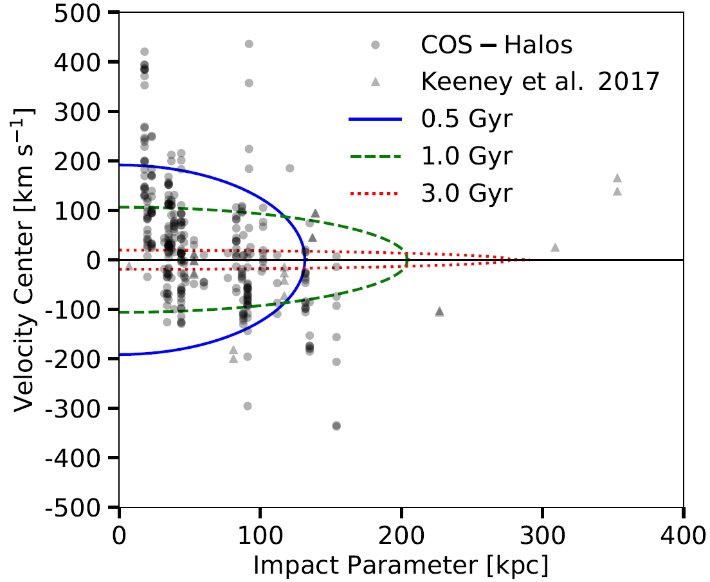
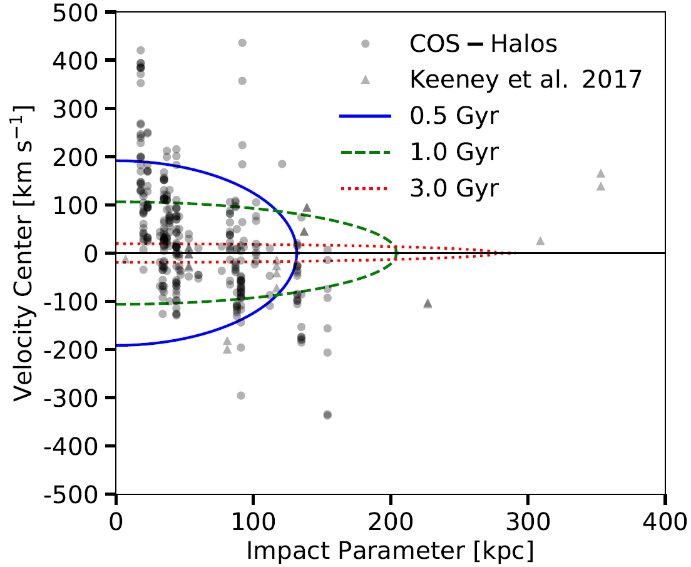
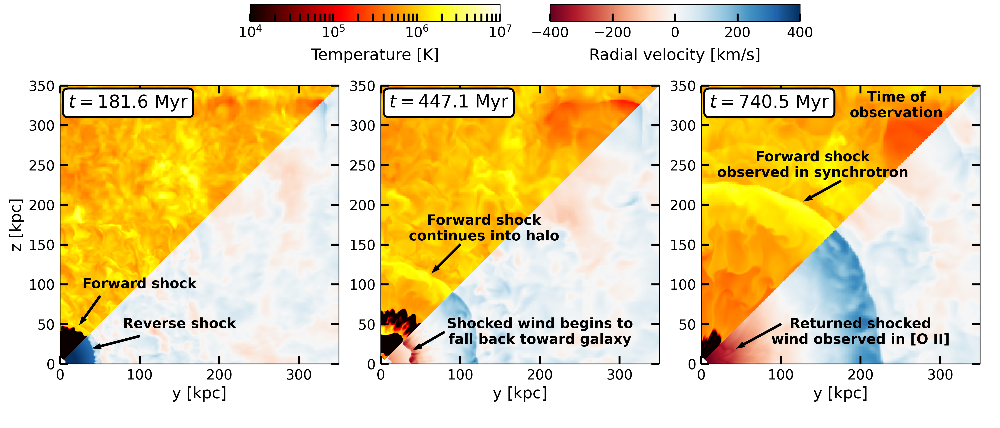
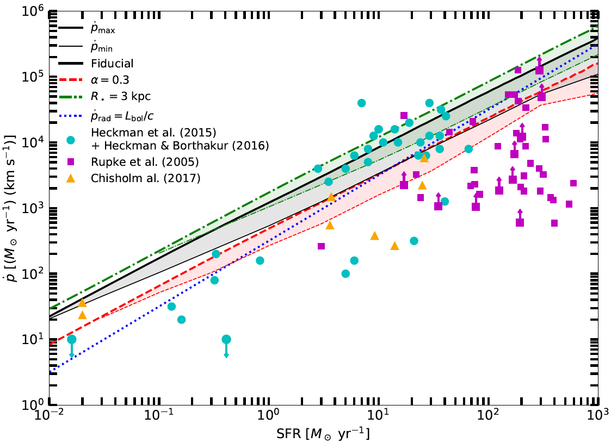

Galactic Winds
and other projects in my PhD thesis
My PhD dissertation work focused on using a combination of analytic models, simulations, and observations to describe the interaction between galactic winds and the CGM. With Professor Todd Thompson, I developed a model of a supernovae-driven galactic wind bubble to explain the COS-Halos results (Werk et al. 2014), where an unusually large mass of cold (T = 104 K) gas was observed in absorption in background quasar spectra at distances of up to 160 kpc from the center of the galaxies in the sample. Both star-forming and passive galaxies have this cold gas, and it cannot be supported in hydrostatic equilibrium. We published a paper describing our analytic model, "Fast Winds Drive Slow Shells: A Model for the Circumgalactic Medium as Galactic Wind-Driven Bubbles".
 

The above left diagram shows the many regions of the wind bubble model, and the above right plot shows the velocity of the cool edge of the bubble, as a function of impact parameter of a sight line, compared to the velocities of observed absorption lines in the COS-Halos sample. A range of bubbles with various ages and wind-driving parameters accurately predicts the range of observed velocities.
My wind bubble model has now been applied to explain a number of different observational scenarios. Of particular note is the Makani wind bubble, which spans 100 kpc and emits at [O II]. Rupke et al. (2019) showed that the age and extent of the Makani wind can be described by our wind bubble model. More recently, I developed a new set of simulations to evolve my wind bubble model in a more realistic circumgalactic medium, and found that such a model could describe the new phenomenon of Odd Radio Circles (ORCs). These objects are nearly-circular shells of radio synchrotron emission, often centered on a galaxy. If they are related to the galaxies sometimes found at their centers, then they have diameters of hundreds of kpc. In "Ionized Gas Extended Over 40 kpc in an Odd Radio Circle Host Galaxy", we showed that my wind bubble model, as evidenced by new simulations, could describe both the ORC and the observed extended [O II] emission in one particular object. The image below shows temperature and radial velocity slices of the simulated wind bubble at three times during its evolution.
On the observational side, I worked with Professor Smita Mathur to analyze a very high signal-to-noise Hubble Space Telescope UV spectrum toward the quasar J1009+0713, which has two galaxies along the line of sight to the quasar at lower redshift. We analyzed the circumgalactic medium gas seen in absorption in the quasar's spectrum to characterize the CGM of both galaxies to higher precision than ever before. The resulting paper is "A High Signal-to-Noise HST Spectrum Toward J1009+0713: Precise Absorption Measurements in the CGM of Two Galaxies". We found that the CGM of these galaxies contain many kinematically different phases of gas, pointing to the idea that the CGM is not only multiphase but also dominated by multiple types of physics and ionization processes. We also found that the high-ionization state metal lines that trace warm (T = 105.5 K) gas could be produced by a radiatively-cooling flow traveling at v = 30-80 km/s, very similar to my wind bubble model.
Radiative cooling in starburst winds
In "Second Generation Stars in Globular Clusters from Rapid Radiative Cooling of Pre-Supernova Massive Star Winds" (ADS link), we developed a model to produce multiple populations of stars within a star cluster. Most globular clusters that have been recently closely examined show evidence that they are not simple stellar populations and that they contain two or more populations with different chemical signatures. The model proposes that stellar winds from a first stellar generation can radiatively cool and remain bound to the potential of the globular cluster to form a second generation. We derived the conditions on globular cluster properties for this stellar wind cooling to occur, and determined what conditions are necessary for a second stellar generation to form at the masses and elemental abundances that match observational data. Here's a short video summarizing parts of this paper: Second Generation Stars in Globular Clusters
In "The Characteristic Momentum of Radiatively Cooling Energy-Driven Galactic Winds" (which can be found here), we derived a theoretical upper limit on the mass and momentum outflow rate of hot galactic winds driven by supernovae in a compact starburst. The maximum comes about because if thermalized outflows are too mass-loaded at their source within the ISM, then they will lose the thermal energy to efficient radiative cooling rather than driving outflows. We compared this maximum momentum to observed outflow momenta from starburst galaxies and found that the maximum captures the upper envelope of the data very well. The maximum holds not just for hot winds but also for cool outflows, in any model where the dynamics of the outflow are driven by the dynamics of the hot phase, such as scenarios where cool clouds are accelerated or precipitated from the hot winds. We also derived a minimum on the outflow momentum under the requirement that the hot winds undergo bulk radiative cooling. The maximum and minimum momenta are very close to each other, producing a characteristic outflow momentum for thermally-driven winds that radiatively cool on large scales. The minimum assumes no mass-loading outside of the starburst, so it doesn’t apply to scenarios where cold clouds in the flow originate outside the starburst and are accelerated by the hot wind. By comparing to data, we found the minimum didn’t match the observations very well, implying the observed photoionized outflows are likely not directly cooling hot winds, but rather clouds entrained in or accelerated by the wind.
Lyman-α Forest in Simulations
My first project as a graduate student was with Professor David Weinberg, "Modeling Lyman-α Forest Cross-Correlations with LyMAS" (ADS link), in which we used a scheme called LyMAS for predicting the Lyman-α forest absorption in a large dark matter-only simulation to predict the cross-correlations between the forest and dark matter halos. We developed a simple functional form to describe how the correlation depends on dark matter halo mass, and used this form to infer the mass of halos hosting quasars and damped Ly-α absorbers (DLAs) by fitting the cross-correlations measured from BOSS in Font-Ribera et al. 2012 and Font-Ribera et al. 2013. We also performed several tests of the LyMAS scheme and concluded that it works essentially perfectly in reproducing the cross-correlations from a hydrodynamic simulation in a more computationally efficient way. We compared our cross-correlations to those predicted by the linear theory of structure formation, and found that linear theory matches the full non-linear correlation predicted by LyMAS down to scales of ~15 h-1 Mpc. A short video summarizing parts of this paper can be found on YouTube.